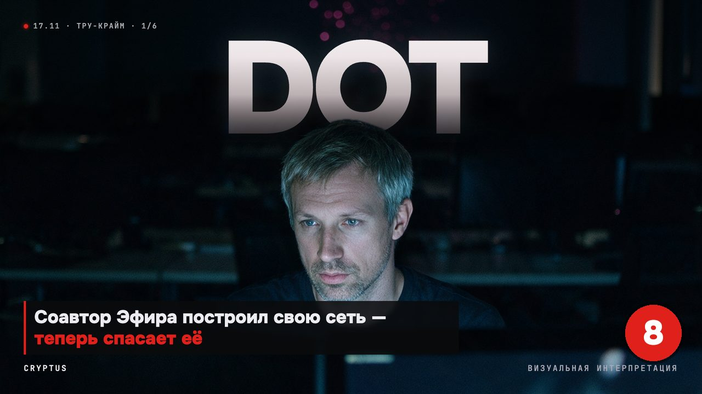
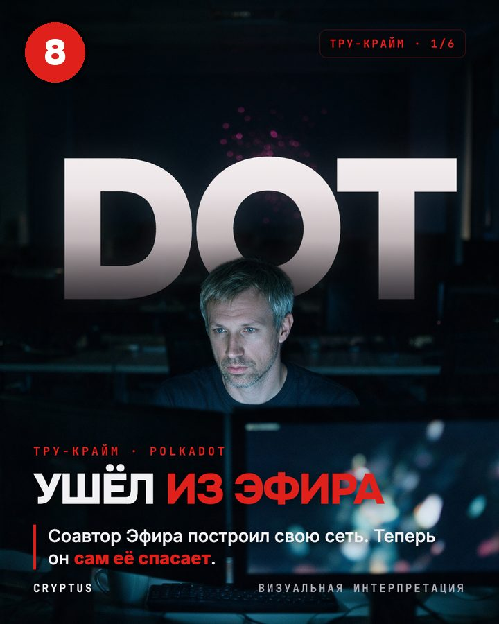
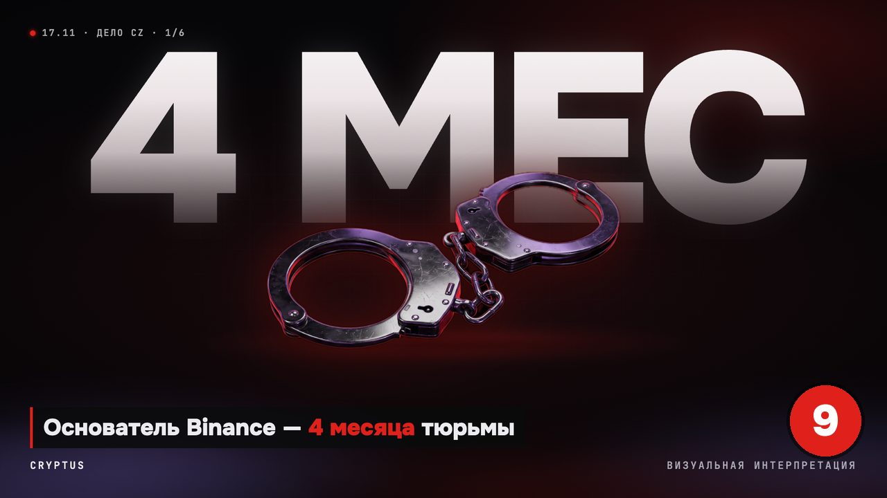
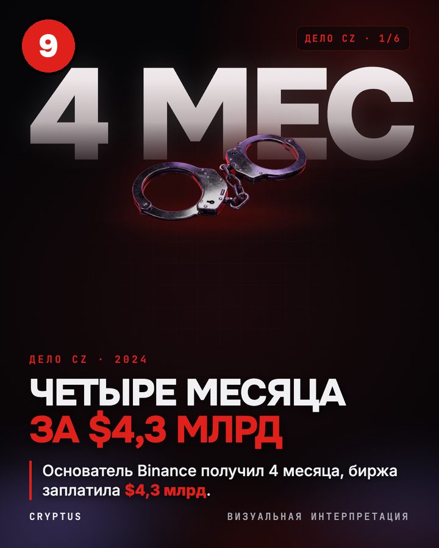
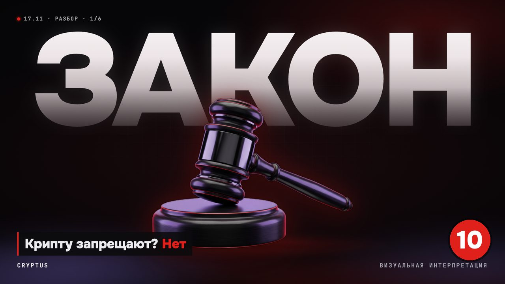
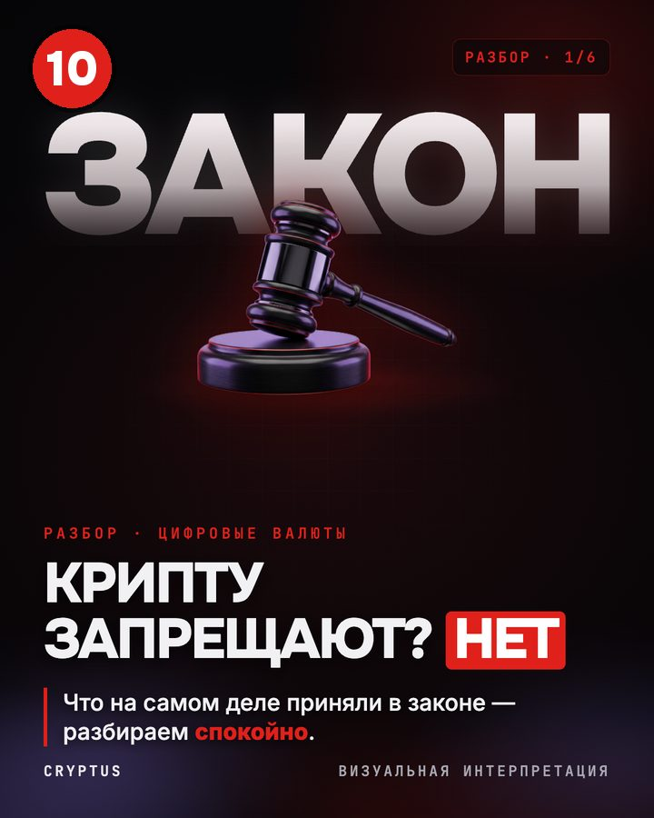
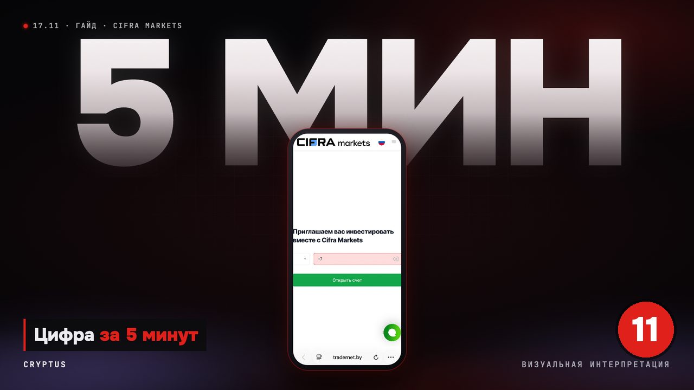
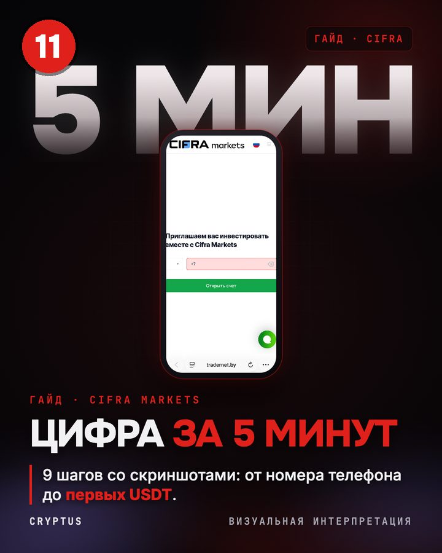

Приём Метеоры A1: предмет вырезан чисто, гигантский текст за ним (или спереди целиком, если вырезать нечего); красный #E0201B / фиолетовый #9B82FF; надписи CRYPTUS сверху нет. Числа — cryptus-editor-bot/visual/TYPE.md §M. Каждый образец — в 16:9 (пост) и 4:5 (карточка), номер = номер выбора на платформе и в боте.
«🎲 Предложи сам» выбирает из 8 дополнительных стилей по тем же правилам.
1 Реализм-сцена 🎨 Стиль
Кинокадр события (город, толпа, красное небо), сверху огромное слово белым по канону Метеоры — целиком, спереди; внизу плашка с фактом.
2 Слово за героем 🎨 Стиль
Человек из новости в кадре; гигантское слово стоит за его спиной, голова заходит на низ букв (приём JAM/Метеоры).
3 Среда съедает буквы 🎨 Стиль
Огромное слово, а пар, дым или вода кадра закрывают только его нижнюю кромку — слово читается целиком.
4 Текст в сцене (табло) 🎨 Стиль
Табло вылетов через плечо: факты новости — строками-рейсами, заголовок — шапкой самого табло тем же янтарным шрифтом.
5 Улика: предмет за словом 🎨 Стиль
Один предмет из новости, вырезанный на тёмном фоне с красно-фиолетовым светом; гигантское слово или цифра за ним — приём Метеоры A1.
6 Флэш-новость 🎨 Стиль
Лицо-эмоция на фоне графиков, логотипы участников, плашка «НОВОСТИ» и три строки капсом; главная цифра — на красной плашке.
7 Карточки с цифрой 🃏 Карточки · серия из 6
Серия из 6 карточек: на каждой одна цифра огромным шрифтом за вырезанным предметом, внизу заголовок с красным словом и пояснение.


8 Тру-крайм: человек 🃏 Карточки · серия из 6
Серия из 6 кинокадров истории человека: слово за спиной героя, внизу факт с цифрой — как Гэвин Вуд / Polkadot.


9 Тру-крайм: дело 🃏 Карточки · серия из 6
Серия из 6 карточек-улик (наручники, документы, устройства): предмет вырезан, за ним гигантское слово, внизу факт дела.


10 Карусель-разбор 🃏 Карточки · серия из 6
Серия из 6 объясняющих карточек: предмет-символ (молоток, документ), гигантское слово, ключевое слово заголовка — на красной плашке.


11 Гайд по шагам (Cifra) 🃏 Карточки · серия из 6
Обложка и шаги гайда: телефон со скриншотом шага, гигантская цифра за ним, подпись — что нажать. Скриншоты присылает редактор.